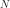
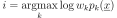

MixtureClassifier¶
(Source code, png, hires.png, pdf)
{kind=link}
{kind=link}
-
class
MixtureClassifier(*args)¶ Particular classifier based on a mixture distribution.
- Available constructors:
- MixtureClassifier(mixtDist)
Parameters: mixtDist :
MixtureA mixture distribution.
See also
Notes
This implements a mixture classifier which is a particular classifier based on a mixture distribution:
The classifier proposes  classes. The rule to assign a point to a class
 is defined as follows:
is defined as follows:
See useful methods
classify()andgrade().Methods
classify(*args)Classify points according to the classifier. getClassName()Accessor to the object’s name. getDimension()Accessor to the dimension. getId()Accessor to the object’s id. getMixture()Accessor to the mixture distribution. getName()Accessor to the object’s name. getShadowedId()Accessor to the object’s shadowed id. getVerbose()Accessor to the verbosity. getVisibility()Accessor to the object’s visibility state. grade(inP, outC)Grade points according to the classifier. hasName()Test if the object is named. hasVisibleName()Test if the object has a distinguishable name. isParallel()Accessor to the parallel flag. setMixture(mixture)Accessor to the mixture distribution. setName(name)Accessor to the object’s name. setParallel(flag)Accessor to the parallel flag. setShadowedId(id)Accessor to the object’s shadowed id. setVerbose(verbose)Accessor to the verbosity. setVisibility(visible)Accessor to the object’s visibility state. -
__init__(*args)¶
-
classify(*args)¶ Classify points according to the classifier.
Available usages:
classify(inputPoint)
classify(inputSample)
Parameters: inputPoint : sequence of float
A point to classify.
inputSample : 2-d a sequence of float
A set of point to classify.
Notes
The classifier proposes classes where is the dimension of the mixture distribution mixtDist. The rule to assign a point to a class
is defined as follows:In the first usage, it returns an integer which corresponds to the class where inputPoint has been assigned.
In the second usage, it returns an
Indicesthat collects the class of each point of inputSample.
-
getClassName()¶ Accessor to the object’s name.
Returns: class_name : str
The object class name (object.__class__.__name__).
-
getDimension()¶ Accessor to the dimension.
Returns: dim : integer
The dimension of the classifier.
-
getId()¶ Accessor to the object’s id.
Returns: id : int
Internal unique identifier.
-
getMixture()¶ Accessor to the mixture distribution.
Returns: mixtDist :
MixtureThe mixture distribution.
-
getName()¶ Accessor to the object’s name.
Returns: name : str
The name of the object.
-
getShadowedId()¶ Accessor to the object’s shadowed id.
Returns: id : int
Internal unique identifier.
-
getVerbose()¶ Accessor to the verbosity.
Returns: verb : bool
Logical value telling if the verbose mode has been activated.
-
getVisibility()¶ Accessor to the object’s visibility state.
Returns: visible : bool
Visibility flag.
-
grade(inP, outC)¶ Grade points according to the classifier.
Available usages:
grade(inputPoint, k)
grade(inputSample, classList)
Parameters: inputPoint : sequence of float
A point to grade.
inputSample : 2-d a sequence of float
A set of point to grade.
k : integer
The class number.
classList : sequence of integer
The list of class number.
Notes
The grade of with respect to the class k is .
In the first usage, it returns a real that grades inputPoint with respect to the class k. The greatest, the best.
In the second usage, it returns an
Indicesthat collects the grades of the point of inputSample with respect to the class of classList.
-
hasName()¶ Test if the object is named.
Returns: hasName : bool
True if the name is not empty.
-
hasVisibleName()¶ Test if the object has a distinguishable name.
Returns: hasVisibleName : bool
True if the name is not empty and not the default one.
-
isParallel()¶ Accessor to the parallel flag.
Returns: flag : bool
Logical value telling if the parallel mode has been activated.
-
setMixture(mixture)¶ Accessor to the mixture distribution.
Parameters: mixtDist :
MixtureThe mixture distribution.
-
setName(name)¶ Accessor to the object’s name.
Parameters: name : str
The name of the object.
-
setParallel(flag)¶ Accessor to the parallel flag.
Parameters: flag : bool
Logical value telling if the classification and grading are done in parallel.
-
setShadowedId(id)¶ Accessor to the object’s shadowed id.
Parameters: id : int
Internal unique identifier.
-
setVerbose(verbose)¶ Accessor to the verbosity.
Parameters: verb : bool
Logical value telling if the verbose mode has been activated.
-
setVisibility(visible)¶ Accessor to the object’s visibility state.
Parameters: visible : bool
Visibility flag.